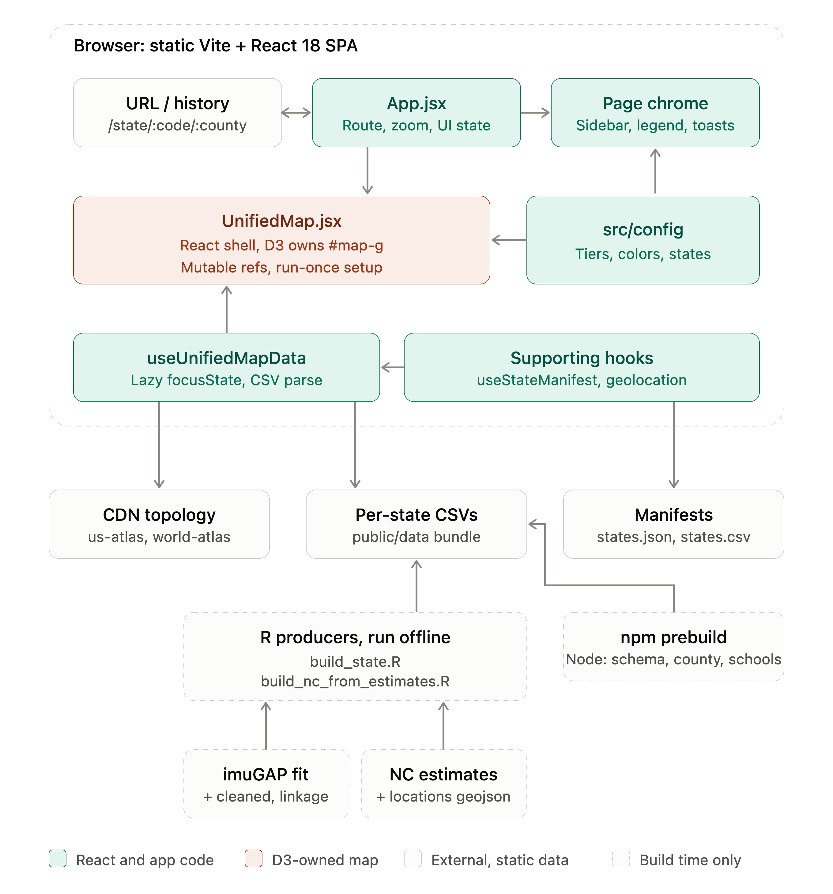

D2: Design Document
Current site: Single-page Vite + React 18 app. Page chrome is React; the interactive map is D3 over us-atlas TopoJSON. Deployed as a static site on GitHub Pages under the /measles-dashboard/ base path.
GitHub: https://github.com/ACCIDDA/measles-dashboard
I. Architecture

The dashboard is a static single-page app (Vite + React 18) with no backend. Its URL drives everything: App.jsx parses the route into a zoom level (national, state, county) and passes it, along with a small amount of UI state, to the page chrome and the map.
UnifiedMap.jsx is the one place React and D3 meet. React renders the SVG shell and D3 owns everything inside #map-g, using mutable refs so the setup effect runs once. Colors and thresholds come from src/config. useUnifiedMapData loads shared topology and manifests once, then lazy-loads each state's CSVs on demand and caches them. Geography comes from a CDN, and all other data comes from static files served alongside the app.
The data behind those files is produced in two stages, both outside the running app:
- R producers (build_state.R for states with an imuGAP fit, build_nc_from_estimates.R for NC's pre-predicted estimates) write a shared CSV schema, and the results are committed under public/data/.
- On every build, an npm prebuild step generates download and API files from the committed schools.csv: per-county CSVs, all-schools.csv, schema.json (from the single-source src/data/schema.js) and the API docs page.
Notes
- Committed vs generated: The app loads only the committed state CSVs and schools.csv. Everything prebuild generates is for downloads and the data API, not for the app. Generating it at build time avoids committing 150+ derived files on every data change.
- Shared schema: Both R producers emit the same schema, which is why the loader treats every state identically. Adding a state is meant to be data plus config, not code.
- Ownership split: React owns the chrome and D3 owns the map interior. DOM ids like #map-g and #tooltip are load-bearing because D3 and the e2e tests select by them.
- Typed access for outside users: schema.json lets external consumers, for example R through Arrow, read the CSVs with guaranteed column types instead of inferring them.
Questions
- The R scripts are run offline and are not part of prebuild. This differs from what issue #20 originally planned.
- The architecture doc says the pipeline is "in flux" and will be updated after #20 lands. It seems like #20 is finished, so should the pipeline be updated as final?
- The R script headers still describe per-county files as producer output, but the county files are now derived by Node. The diagram follows the Node script.
II. Code Repository
ACCIDDA Measles Dashboard GitHub: https://github.com/ACCIDDA/measles-dashboard
README from client repository:
Measles Vaccination (MMR) Coverage Dashboard
An interactive dashboard visualizing measles (MMR) vaccination coverage across the United States, drilling down from a national overview to individual states, counties, and K–5 schools. Built by ACCIDDA.
🔗 Live: https://accidda.github.io/measles-dashboard/
What it shows
- National view: every US state shaded by its overall coverage; states without data yet render greyed.
- State view: click a state to zoom into its counties, each colored by coverage tier (high / medium / low) or by an under-vaccination lens.
- County view: drill into a county to see its individual K–5 schools, each with a per-grade coverage breakdown.
Coverage estimates come from the imuGAP Bayesian model; school and county geography come from public sources.
Data
All coverage data is published as static CSV files at predictable URLs, so the files that drive the dashboard double as a downloadable, no-auth API:
/data/states.csv one row per state
/data/states/<state>.csv one row per county
/data/states/<state>/counties/<county>.csv one row per schoolEach file carries the same coverage columns at every level: overall coverage with 95% credible intervals, a per-grade (K–5) breakdown, and a coverage tier.
The CSVs are generated from model output by the scripts in scripts/build-data/ and regenerated when the model updates, not on every deploy. The full URL scheme and column reference, with curl examples, are in docs/API.md.
Tech
Single-page Vite + React 18 app. Page chrome is React; the interactive map is D3 over us-atlas TopoJSON. Deployed as a static site on GitHub Pages under the /measles-dashboard/ base path.
How it all fits together is documented in docs/ARCHITECTURE.md.
Quick start
Built and tested against Node 20 (pinned in .nvmrc; what CI runs). Run nvm use to match it.
nvm use
npm install
npm run dev # http://localhost:5173Full command list and the contributor workflow are in CONTRIBUTING.md.
Contributing
See CONTRIBUTING.md. In short: nvm use (Node 20), npm install, and the pre-commit hook runs lint + tests. Adding a new state needs data and a config entry, not code changes.
III. Detailed Data Definitions
- Format and use of each field within the application (state CSVs, schools.csv, schema.json)
- Constraints on individual fields
- Relationships between fields
IV. Design Rationale: Design Decisions
- Decisions that affected the overall design of the system, including things chosen not to do
- Dependencies the application has, and the reason for each
- Any other information that will help the next developer